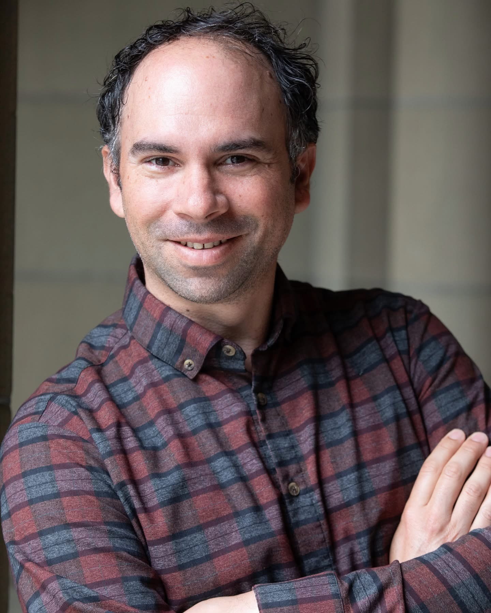
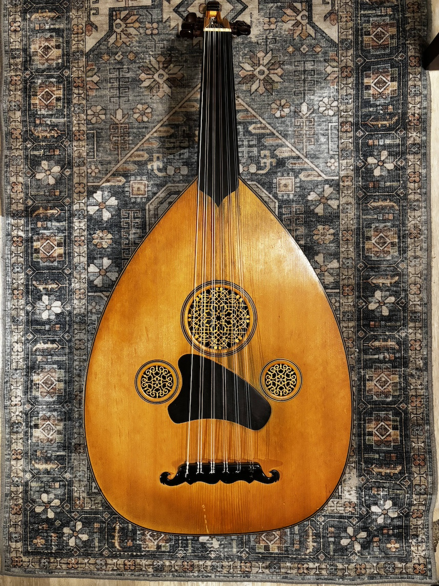
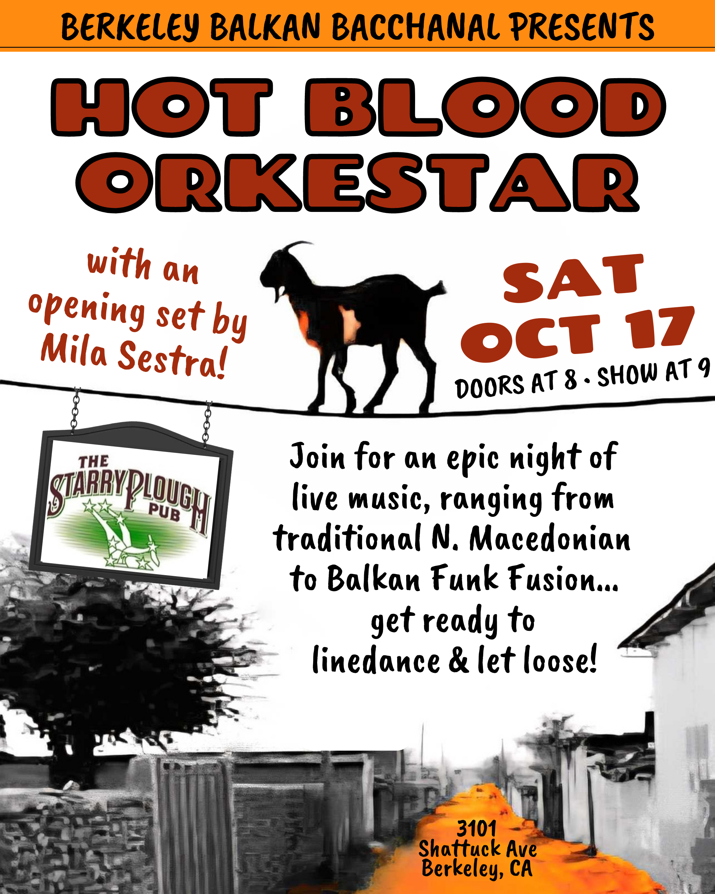

Bands & projects
Bands & projectsMusic
Orchestra Euphonos, Duygu & Friends, Fanfare Zambaleta and related collaborations.
Music →Musician · Band Leader
Event Producer
Music, community, and connection across cultures.



Peter Bonos is a Bay Area musician and bandleader, concert and festival producer, audio engineer, educator and community arts organizer. He leads Orchestra Euphonos, co-founded Duygu & Friends, performs with Fanfare Zambaleta, and produces community music events including the Berkeley Balkan Bacchanal.
Explore Peter’s music, professional work, and the Berkeley Balkan Bacchanal.
Bands & projectsOrchestra Euphonos, Duygu & Friends, Fanfare Zambaleta and related collaborations.
Music → Professional
ProfessionalPerformance, sessions, teaching, event production, live audio, community arts, and professional background.
Work →
Concert series · BerkeleyPeter produces the Berkeley Balkan Bacchanal, a recurring Balkan music series at The Starry Plough featuring Bay Area and visiting artists.
Visit Berkeley Balkan Bacchanal ↗Upcoming performances, concerts and community music events. Check back for newly announced dates.
Interested in booking Peter for a performance or event?
Booking & inquiries →